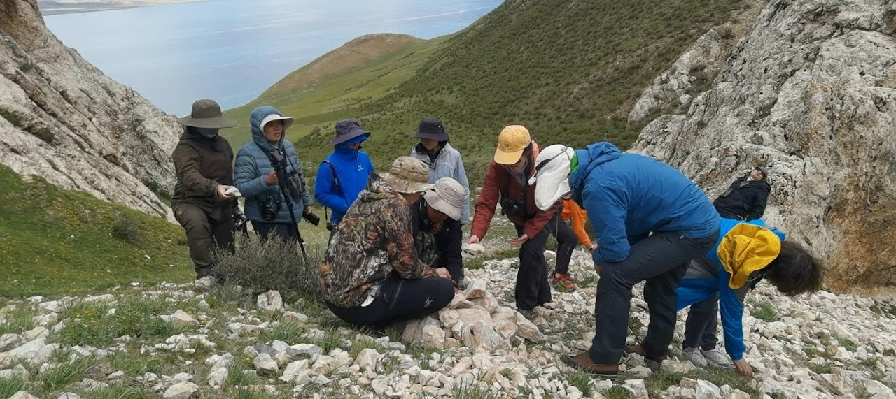
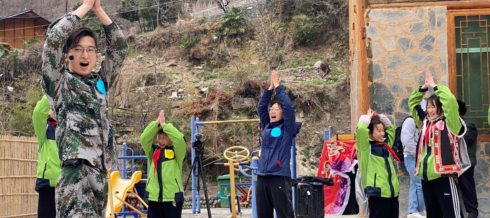
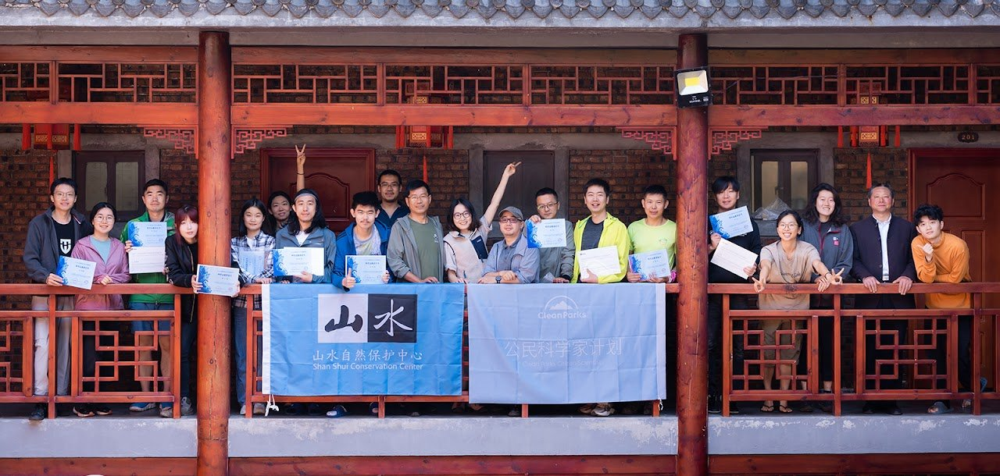
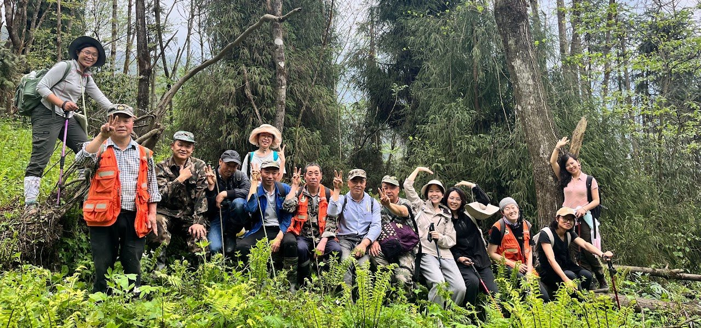
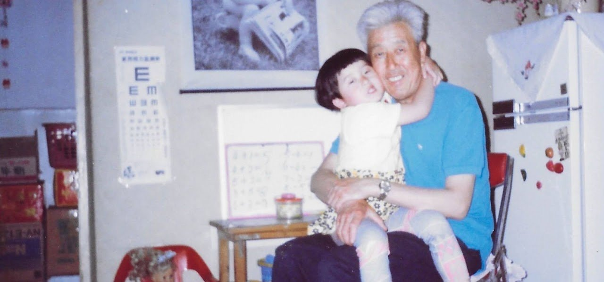

China's First National Park: Managing Access and Benefits
Open questions about access and benefits from concessionaires in Sanjiangyuan National Park.

Open questions about access and benefits from concessionaires in Sanjiangyuan National Park.

A community-based environmental education program for local students in Guanba Village, Pingwu County, Sichuan.

Volunteer citizen scientists survey the Wenxian salamander in Liziba Village, Wen County, Gansu.

Working with local community rangers to scout and document two hiking trails near Yunhua Village, Dayi County, Sichuan.

A personal essay on the impact of COVID-19 on my family.
See more of my personal essays here.